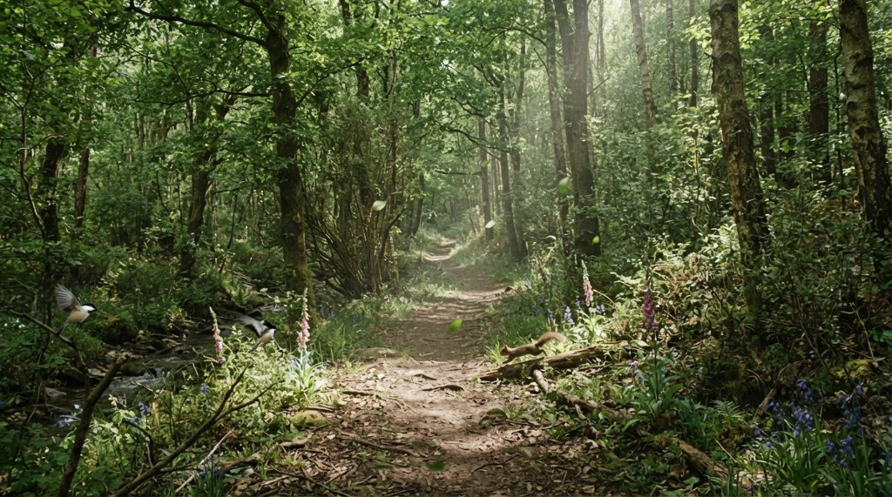
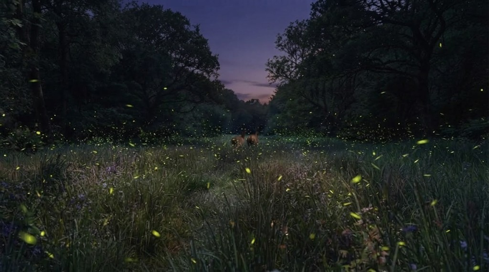

This chapter records a targeted Construct prompt change. Image-edit models like Nano Banana tend to keep the source camera when consecutive beats are the same kind of place — walking deeper through one forest, riding one coaster, skating one hill — and only change activity, subjects, weather, or style. The next canonical must now show visual evidence that the camera viewpoint has physically advanced. Journey Prompt, Director, Cinematographer, and Camotion are unchanged. Camotion Phase 1 remains frozen.
Viewpoint displacement is the proof. A new location type is not.
Construct still names this destination first, then moves the camera from the source still, then attaches far-field continuity. Spatial progression is now the primary construction requirement: render from a substantially progressed camera, not the source station; nearby source foreground should have passed behind the camera or been substantially repositioned; new terrain should appear ahead because of that move. Preserve world and style. Do not preserve the source composition. Substituting new content into the same framing is a failure.
Prompt
CONSTRUCT ONLY
destinationConstructionPrompt keeps the existing order. The added requirement sits after this destination's visual and before the camera-move line.
SPATIAL PROGRESSION IS PRIMARY.
Render this canonical from a substantially progressed camera viewpoint. Do not render it from the source camera position. Nearby foreground geometry from the source must have passed behind the camera or be substantially repositioned. Reveal new terrain and environment ahead as a consequence of that movement.
The destination may be the same kind of place as the source — deeper in the same forest, farther along the same track, farther down the same hill. Do not invent a new type of location to prove progress. The required change is camera viewpoint displacement, not a change of world.
Do not satisfy the destination merely by changing the activity, subjects, weather, lighting, visual style, or state of the source scene. Preserve world and style continuity, but do not preserve the source composition.
Keeping the source composition and substituting new content is a failure.
Example: following deer through one continuous world.
A live untitled journey after this prompt. A is a daylight forest path. B is still that forest: the camera has gone farther in, and deer now run the trail ahead. C is dusk at the lakeshore those deer have reached. D is in the meadow, following them through fireflies. Day to dusk and path to water are world changes the Journey called for. They are secondary to the camera having actually moved. The ~20s take is first-person travel along that route.
A

A — Opening forest path. Source for B.
B
B — Same kind of place. Deeper on the path. Deer ahead.
C
C — The camera has left the path. Dusk lakeshore.
D

D — In the meadow, following the deer. Source framing is gone.
This is not a new Camotion operator and not a Director change.
Slice 8 remains the current product overview. Slice 9 remains photographic-A Camotion evidence. This chapter is Construct-prompt evidence on a same-environment journey that later arrives at water and dusk because the Journey asked for that, not because the still model needed a new biome to prove it had moved.